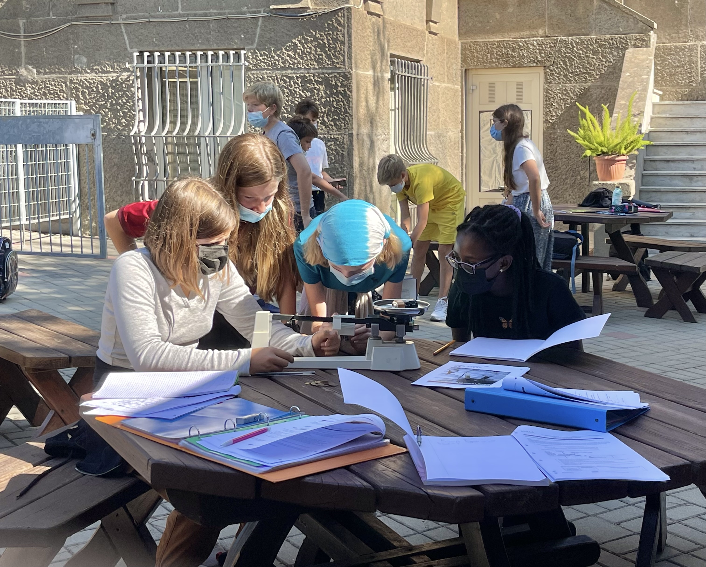
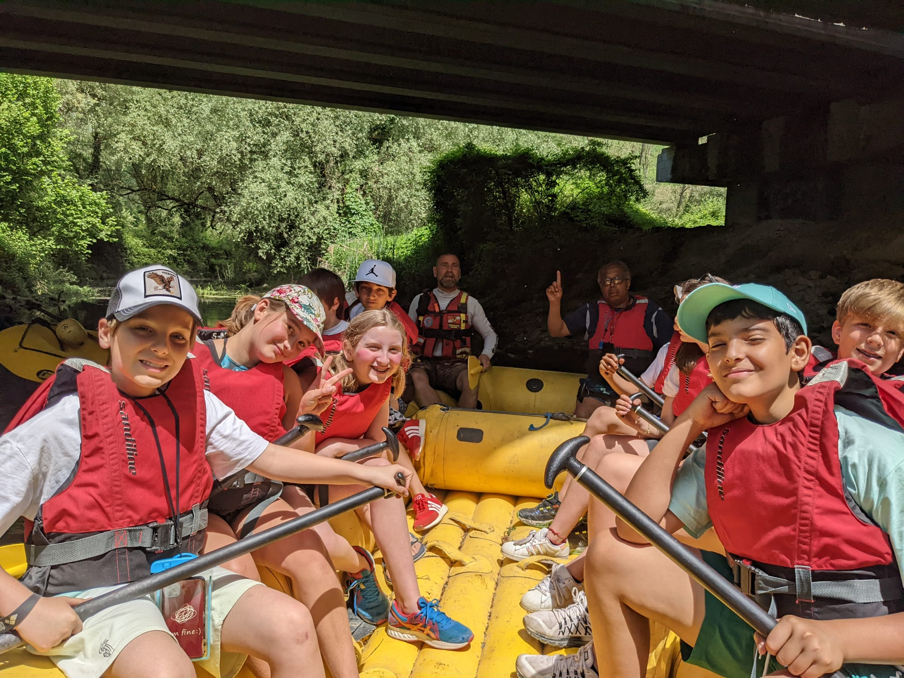
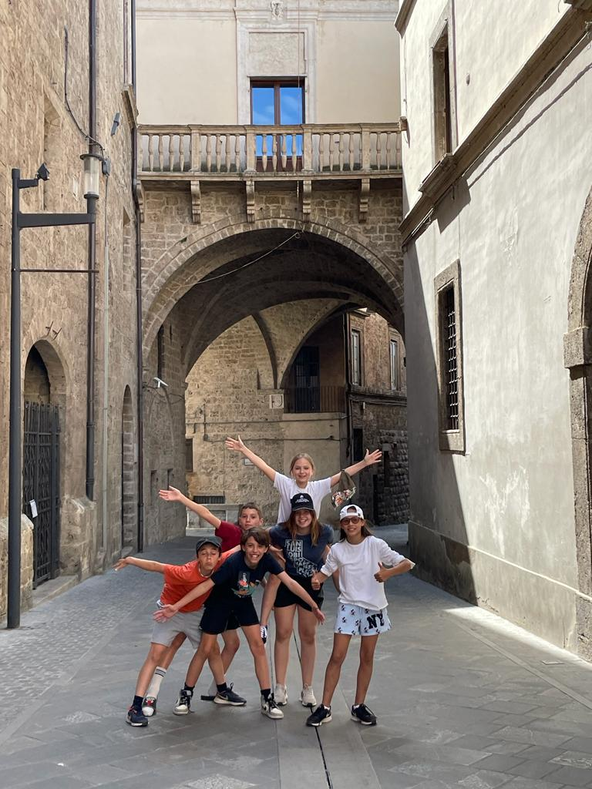
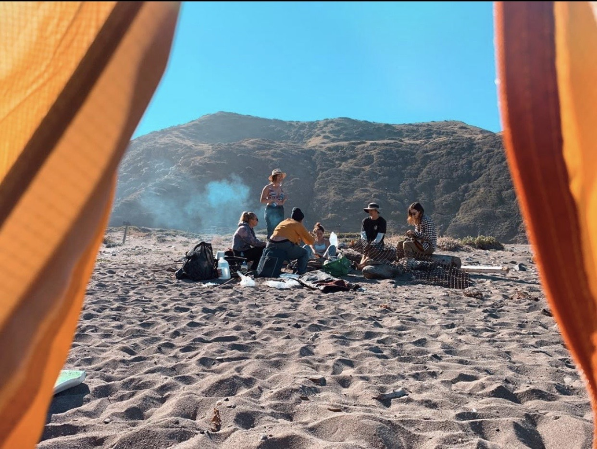
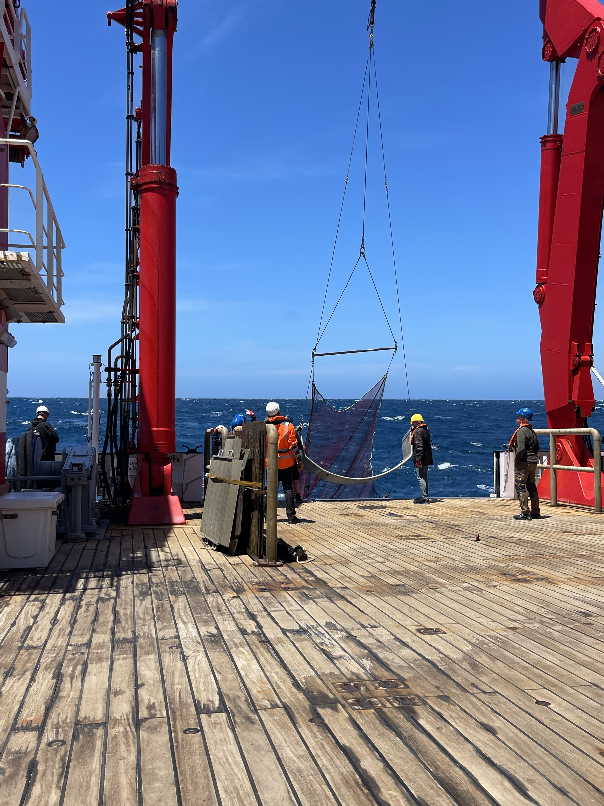
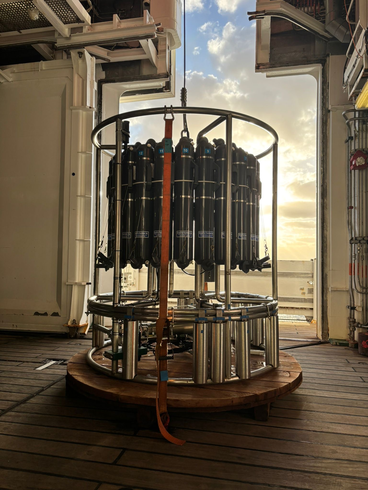
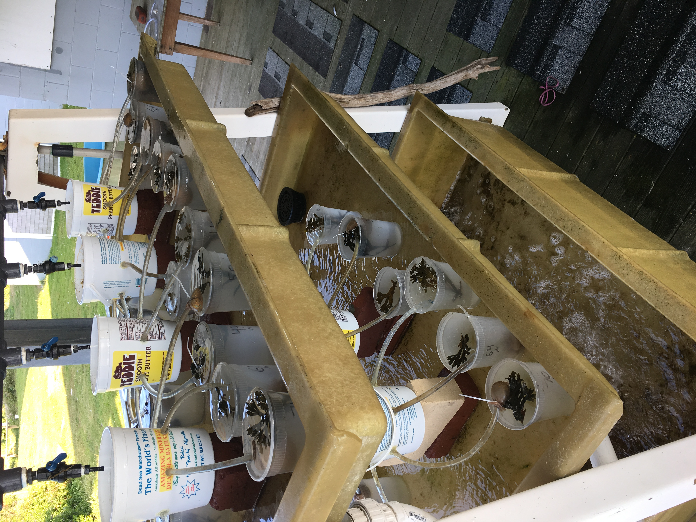
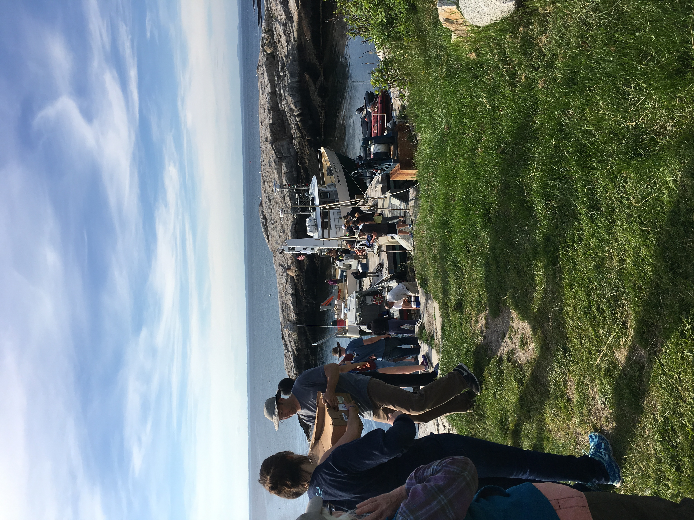
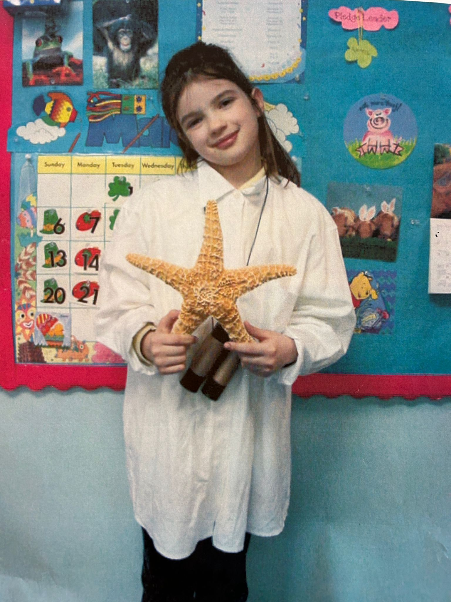

Helping students see themselves as capable scientists
I teach middle and early high school science in international settings, with NGSS-aligned inquiry, clear lab routines, and real organisms and phenomena. My experience spans Rome-based classroom teaching, marine/outdoor education, and research in marine genomics.
Featured Publication
Swift SNPs: Evaluating Rapid DNA Extraction Methods for Scalable Genotyping in Aquaculture
A practical comparison of rapid DNA extraction methods for scalable genotyping in barramundi breeding programs, with HotSHOT highlighted as an effective rapid alternative to CTAB.
Classroom Teaching
Selected outcomes
I design my classes so students don’t just learn science content, but develop confidence, independence, and scientific thinking skills that carry across subjects and grade levels.
Scientific thinking
Students learn to ask testable questions, design investigations, and revise explanations using evidence—not just follow procedures.
Lab confidence
Through consistent routines, students become comfortable handling equipment, collecting data, and explaining results in writing and discussion.
Curiosity with structure
Lessons balance wonder (real organisms, field contexts) with clear expectations, helping students stay engaged without losing rigor.
International middle and high school science teacher with NGSS-aligned instruction and IB/AP readiness in mind. I build confident scientists through hands-on investigation, clear routines, and joyful rigor.
- NGSS Integrated Science (Grades 6–8)
- Biology & Environmental Science (Grade 9)
- NGSS-aligned inquiry and modeling
- IB-style skills and readiness
- Scientific writing and data interpretation
What you can expect in my classroom
- Inquiry-first learning grounded in NGSS practices: questioning, modeling, and evidence-based explanation.
- Clear lab routines and expectations so students feel confident handling equipment and data.
- Support for multilingual learners, including explicit vocabulary instruction and structured scientific writing.
- High expectations with encouragement so students feel safe taking intellectual risks and asking questions.
Classroom Teaching (International Schools)
American Overseas School of Rome (AOSR) — International K–12 American-curriculum school serving a diverse, multilingual student body in Rome, Italy. I taught 6th–8th grade NGSS Integrated Science and 9th grade Biology & Environmental Science, designing lessons with IB-style skills in mind, including scientific writing, data interpretation, and conceptual understanding. Beyond the classroom, I served as an advisor, supported overnight field trips (including a rafting program and travel to Liguria), and collaborated closely with colleagues to create engaging, student-centered learning experiences.



Outdoor & Experiential Education
Outdoor Educator at Camp Orkila (San Juan Islands, WA) and marine science educator at Catalina Island Marine Institute (CA), working with learners from elementary ages through teens. Proud moment: taking students into the ocean to observe wildlife in its natural habitat, including students who were initially nervous.




Athletics & Coaching
Former Division I swimmer (100-yard butterfly). I’m interested in coaching (assistant or head) and I’m especially confident supporting kids in the water with safety, skill-building, and encouragement.
Coaching strengths
- Clear progressions: technique → confidence → performance
- Positive team culture and goal-setting
- Comfort supervising students in aquatic environments
Research & Field Experience
Selected projects
A few snapshots of projects that show how I work: careful methods, clear documentation, and enthusiasm for real-world science.
JCU — Barramundi genomics
Master’s research testing rapid DNA extraction methods for aquaculture genotyping to support a barramundi breeding program.
R/V Sonne — ocean research
Ship-based work focused on plankton and primary productivity, with additional eDNA-related involvement.
Shoals — Appledore Island ecology
Intertidal transect surveys supporting multi-year coastal ecology monitoring and biodiversity observation.
Master’s research at James Cook University focused on rapid DNA extraction methods for aquaculture genotyping (barramundi breeding program). I’ve also contributed to ship-based research aboard R/V Sonne and coastal field ecology through Shoals Marine Lab (Appledore Island, ME).




Tools & Methods
Skills
I bring field-to-lab experience and clear scientific communication—useful in interdisciplinary teams and applied research settings.
Genomics & Lab
- DNA extraction optimization (rapid methods) for aquaculture genotyping workflows
- PCR-based assay and sequencing context (microsatellites / targeted loci)
- Reproducibility mindset: troubleshooting, sample handling, documentation
Field & Ocean Science
- Ship-based sampling exposure (R/V Sonne): plankton & primary productivity context
- Coastal ecology fieldwork (Shoals / Appledore): intertidal transects and monitoring
- Comfort working outdoors in teams and time-sensitive sampling plans
Data & Communication
- Analysis workflow experience (R; genotyping tooling context)
- Clear documentation and presentations for mixed technical audiences
- Educator skillset: translating complex work into understandable steps
Comfortable working across field sampling, lab workflows, and data analysis—documenting methods clearly and communicating results to mixed technical audiences.
Wet lab & workflows
- DNA extraction optimization (rapid methods; applied genotyping context)
- PCR-based assays; sequencing context; troubleshooting and QC mindset
- Sample handling, documentation, reproducibility
Field & data
- Ship-based research exposure (R/V Sonne): plankton / productivity context
- Coastal ecology fieldwork (Shoals / Appledore): intertidal transects
- R for analysis and visualization; genomics tooling context
Beyond the Classroom
I bring creativity, patience, and curiosity to my work—qualities I also practice through athletics and art.

- Former Division I swimmer (100-yard butterfly); interested in coaching (assistant or head), with experience supporting kids in the water
- Visual arts and fiber arts
- Show dog handler — Prince Charming (Boston Terrier)
Where it Started
I’ve been curious about the ocean for as long as I can remember. As a kid, I loved overnight YMCA camps, being outside in all weather, and the “infamous” school hiking trips that other students complained about (I genuinely looked forward to them). That early love of field experiences grew into marine biology study, hands-on research, and eventually a teaching style that treats science as something students do—through observation, questions, data, and real environments.
